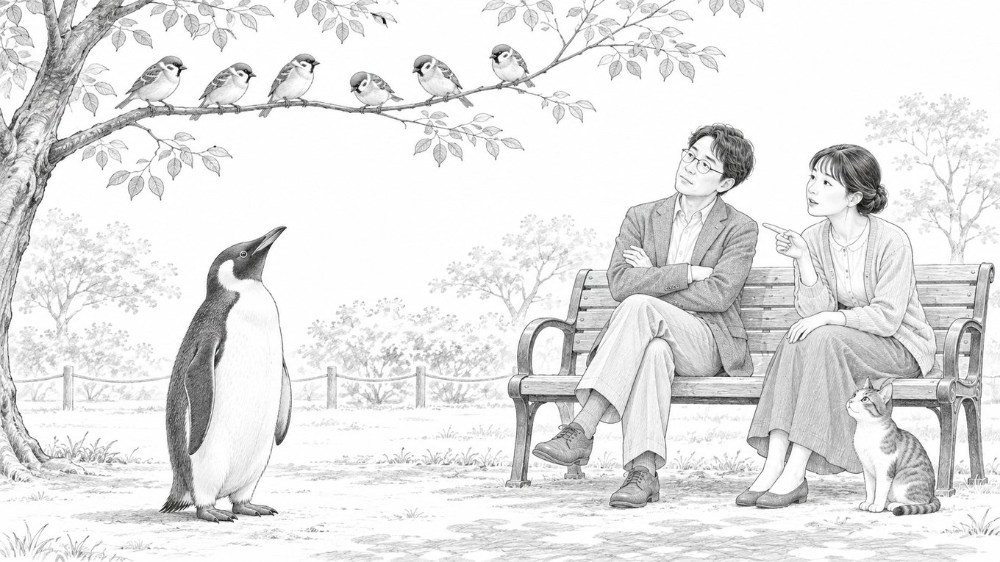

「それ、コンサルじゃないですよね」と言われたら。

どーも！とーるです！
最近、スレッズで「コンサル」の話題が盛り上がっていますね。
「コンサルなら、ここまでやるべき」
「それをやらないなら、コンサルじゃない」
……盛り上がっている、というか、だいぶ燃えています。
見ていて、ひとつ聞いてみたくなりました。
そもそも「監督」って、何をする人ですか？
「先生」って、何をする人ですか？
「店長」って、何をする人ですか？
同じ「監督」でも、やっていることは違う
スポーツの監督を思い浮かべてみてください。
- ベンチから戦略だけを指示する監督
- グラウンドに出て、技術を直接教える監督
- 練習には口を出さず、チーム全体のマネジメントに徹する監督
どれも「監督」です。
先生も同じです。
- 授業で知識を教える先生
- 問題を解かせて、添削する先生
- 学習計画の管理まで見てくれる先生
これも全部「先生」。
でも、誰かが横から
「先生なら、学習計画まで見るべきだ！」と言い出したら、ちょっと変ですよね。
その先生と生徒のあいだで「うちは授業だけです」と決まっているなら、それで成り立っているので。
肩書きは、ざっくりした「分類」でしかない
つまり、肩書きというのは、大まかな「分類」なんです。
「この人はだいたいこの辺の仕事をしています」という、ラベルのようなもの。
その人が実際に何をするかまでは、肩書きでは決まっていません。
決めているのは、提供する人と頼む人のあいだで合意した「役務」です。
（役務とは、提供するサービスの中身のことです。
どこまでやるか、という範囲も含みます）
コンサルタントも同じです。
戦略を提案するだけの人もいれば、
実行まで一緒に走る人も、
制作を代わりにやる人も、
進み具合を管理する人もいます。
どこまでやるかは、役務範囲しだい。
なので、大事なのはこの2つです。
どんな役務を提供すると合意したのか。
その役務を、ちゃんと果たしているのか。
もちろん、説明と中身が違う、合意したことをやらない、誤解させるような売り方をする。
これは問題です。ここは、はっきり分けて考えたほうがいいところです。
でも、当人同士がきちんと合意している役務に対して、
外から「それはコンサルじゃない」と言うのは、
ちょっと話が飛んでいる気がするんですよね。
プロトタイプ理論——人は「典型例」で判断している
じゃあ、なんでこういう言い合いが起きるのか。
ここ、心理学的にちょっと面白いところです。
人は「コンサルタント」と聞くと、
頭の中に、自分が知っている「いかにもコンサル」な人を思い浮かべます。
これを説明するのが、プロトタイプ理論です。
人は言葉の意味を、定義よりも「いちばんそれっぽい例（典型例）」で捉えている、という考え方です。
たとえば「鳥」と聞いて、何を思い浮かべますか。
たぶん、スズメやハトですよね。
ペンギンを最初に思い浮かべる人は、あまりいないと思います。
でも、ペンギンも鳥です。
飛べないからといって、鳥じゃなくなるわけではありません。
（本人たちも、たぶん気にしていません。）
「コンサル」でも、同じことが起きています。
ある人の頭の中の典型例は、実行までがっつり伴走してくれる人。
別の人の典型例は、戦略だけ示して、あとは任せる人。
それぞれが自分の「スズメ」を基準にして、相手の「ペンギン」を鳥じゃないと言っている。
言い合いがかみ合わないのは、たぶんここです。
ただし、コンサルは生き物の分類とは違います。
業界の慣習や文脈で、意味が変わる言葉です。なので、「何でもコンサルと名乗っていい」という話ではありません。
問題は、自分が思い浮かべる典型例を、唯一の正解だと思ってしまうことです。
「コンサルかどうか」と「価値があるかどうか」は、別の話
もう一段だけ、整理させてください。
実はこの議論、2つの話が混ざっています。
- 「それはコンサルと呼べるのか」という、定義の話
- 「そのサービスは、料金に見合う価値があるのか」という、中身の話

たとえば、アドバイスだけをするコンサルがいたとします。
それだけで「コンサル失格」とは言えません。
アドバイスだけ、という役務で合意しているなら、それで成り立っています。
でも、そのアドバイスが、払ったお金に見合うかどうかは、ちゃんと問えます。
以前のコラム（#17）で、「コンサルを名乗っていても、実際は○○屋さんでは？」という話を書きました。
あれも、肩書きの定義を決めたかったわけではありません。
相手の問題を見抜けているか、という中身の話でした。
肩書きでは決まらない。でも、中身はちゃんと見られている。
批判するなら、肩書きではなく、中身のほうだと思うんです。
自分の「普通」は、世の中の「標準」とは限らない
「コンサルなら○○すべき」という言葉の裏には、たいてい、その人が見てきた「普通のコンサル」がいます。
それ自体は、悪いことではありません。
誰だって、自分の経験から物事を見ています。
ただ、自分の知っている「普通」は、必ずしも世の中の「標準」ではありません。
自分の知っている定義を、他人の役務範囲にまで当てはめようとしていないか。
これ、コンサルに限らず、
「先生なのに」「親なのに」「社会人なのに」みたいな言葉にも、同じことが言えるかもしれません。
あなたの頭の中の「スズメ」は、どんな鳥ですか。
とーる｜猫好きの行動経済アナリスト